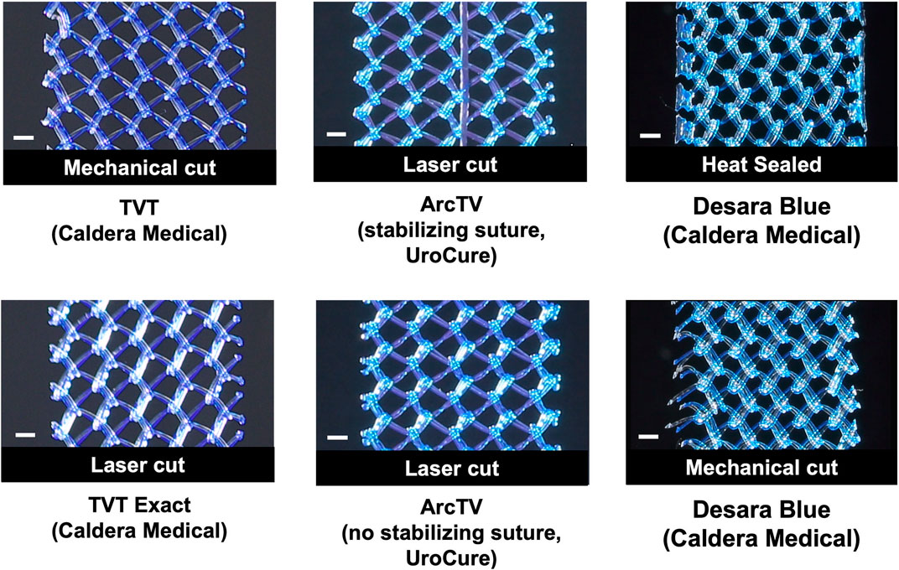

Página 11 · A cirurgia da incontinência de esforço
Cirurgia da IUE: de Burch ao sling — TVT × TOT
Burch (colpossuspensão vesical): o que é e para quem era
A cirurgia de Burch — a colpossuspensão vesical — disseca o espaço retropúbico (atrás da sínfise púbica, por via abdominal ou por vídeo), chega à base da bexiga e a levanta, passando um fio de cada lado pela vagina: uma sutura que não transfixa, apenas pega um pedacinho da vagina, criando um apoio suburetral. É via abdominal e era feita para a hipermobilidade. E, contra o susto do nome: “colpo” = vagina; colpossuspensão vesical = suspensão da bexiga pela vagina (durante a cirurgia, alguém posiciona o dedo na vagina por baixo, empurrando a bexiga para cima). O nome não é para assustar.
O mito desmontado: o Burch “já foi” — mas não porque falha
Aqui está a pegadinha. O Burch “já foi” — mas não porque não funciona. Ele funciona e continua funcionando. O que aconteceu foi que se descobriu uma cirurgia muito mais simples, mais rápida, com menos complicação e mesmo resultado — o sling —, e o Burch foi perdendo espaço. Ainda pode aparecer na prova como opção. Confundir “caiu em desuso” com “não funciona” é o erro que a banca arma.
Sling = faixa: da aponeurose autóloga ao kit de polipropileno (o padrão atual)
Sling = faixa. Antigamente usava-se uma faixa autóloga de aponeurose do reto abdominal — o que exigia uma cirurgia abdominal só para retirá-la. Hoje usa-se um kit pronto com faixa de polipropileno. O sling é o padrão atual da cirurgia da incontinência de esforço: diante de “abordagem cirúrgica na incontinência de esforço”, a resposta é sling. E o sling tem dois trajetos, que é o que a prova cobra.
TVT retropúbico: passa do lado da bexiga → exige cistoscopia intraoperatória
O TVT (sling retropúbico) passa atrás da sínfise púbica, do lado da bexiga (como no Burch, entra pela vagina e sai no espaço retropúbico). Surgiu primeiro. E, por passar junto à bexiga, tem risco de a agulha lesar a bexiga (e causar fístula) — por isso o TVT sempre exige cistoscopia intraoperatória: entra-se com a câmera para conferir que a bexiga não foi perfurada. Trajeto perto da bexiga = confira a bexiga.
TOT transobturatório: passa pela lateral → dispensa cistoscopia (menor risco vesical)
O TOT (sling transobturatório) passa pelo forame obturatório, pela lateral — não do lado da bexiga. Veio depois do TVT. Por passar longe da bexiga, tem menor risco vesical e NÃO precisa de cistoscopia intraoperatória. Essa é a vantagem do TOT e a distinção que a banca adora: TVT retropúbico → cistoscopia obrigatória; TOT transobturatório → sem cistoscopia.

A trama aberta de polipropileno monofilamentar é o corpo do implante — o “sling = faixa” que é o padrão atual da cirurgia da incontinência de esforço, seja por via retropúbica (TVT) ou transobturatória (TOT).
© 2025 Knight, Meyn e Moalli. Figure 1, Frontiers in Bioengineering and Biotechnology. DOI 10.3389/fbioe.2025.1543808. Sob CC BY 4.0.
| Sling | Trajeto | Surgiu | Cistoscopia intraop | Risco vesical |
|---|---|---|---|---|
| TVT (retropúbico) | atrás da sínfise, do lado da bexiga | primeiro | SIM — obrigatória | maior (lesão / fístula) |
| TOT (transobturatório) | forame obturatório, pela lateral | depois | NÃO — dispensa | menor |
Quiz — fixação
Sobre a cirurgia de Burch (colpossuspensão vesical), assinale a correta:
- B — a virada. “Já foi” por ter sido superada em simplicidade, não por falhar — ela funciona.
- A. É exatamente a leitura errada que se combate: eficácia nunca foi o problema do Burch.
- C. O padrão atual é o sling, não o Burch.
- D. O Burch acessa o espaço retropúbico (via abdominal/vídeo) e faz o apoio suburetral pela vagina — não é puramente vaginal.
Um sling retropúbico (TVT) e um transobturatório (TOT) diferem quanto à cistoscopia intraoperatória porque:
- B — a virada. O trajeto define o risco: TVT retropúbico corre junto à bexiga (→ cistoscopia obrigatória); TOT vai pela lateral, longe da bexiga (→ dispensa).
- A. Inverte os trajetos — é o TVT que passa do lado da bexiga, não o TOT.
- C. Só o TVT exige de rotina; universalizar apaga a vantagem do TOT.
- D. O TVT passa perto da bexiga sim — dizer que ambos são “longe” ignora o risco retropúbico que motiva a cistoscopia.
Fechada a escada da incontinência de esforço, começa a outra síndrome — a bexiga hiperativa, que, ao contrário desta, não se opera.